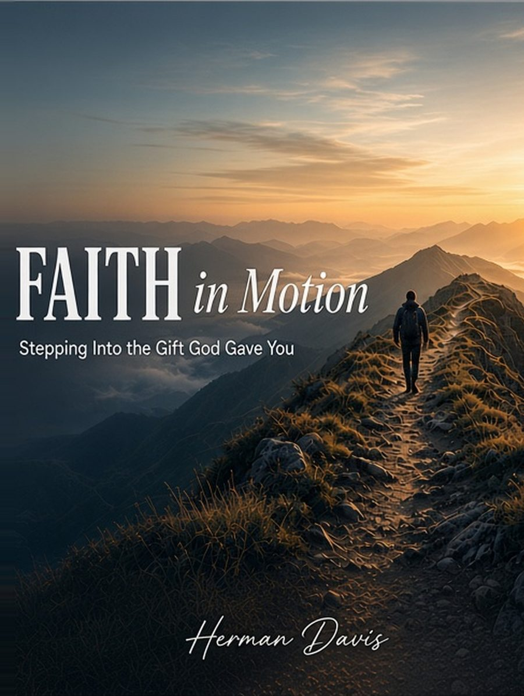

Name it. Step into it.
Faith in Motion
Stepping Into the Gift God Gave You
Faith is not a standstill.
When God gives a gift or a vision, He invites you to step.
You don’t have to choose between trusting God and living on purpose. Faith in Motion helps you recognize the standstill, steward what’s already in your hand, and take the next faithful step.
The paperback (hard copy, $14.99) and the $4.99 Kindle ebook are available now on Amazon. No Kindle device needed: read the ebook on the free Kindle app on iPhone, Android, or computer. Want a free devotional from the book? Join the mailing list.
Paperback Ebook
ISBN 979-8-1758-5995-0

The tension
Holy waiting, or avoidance?
Holy waiting is real. Scripture knows seasons of stillness that honor God. But there is also a quieter counterfeit: freeze dressed in devotion, “I’m just trusting God,” “I’m waiting on the Lord,” while a clear next step goes unwalked.
Faith is not a standstill. Noah built. Abraham went. The servant who buried his talent heard a hard word. The question is not whether waiting can be holy, but whether what you are calling waiting is actually obedience delayed.
You may already know the feeling:
- The conversation the hard word you’ve postponed with someone you love, calling the delay “wisdom” while the relationship thins.
- The calling or gift the talent or vision you’ve shelved, telling yourself God hasn’t opened the door, while the door is already ajar.
- The responsibility the duty already in your hand that you’ve baptized as “not yet,” hoping clarity will arrive without a first step.
Faith is not a standstill. Noah built. Abraham went.
The promise
Faith rests, and moves.
Faith rests in God’s sovereignty, and moves in obedience.
You don’t have to choose between trusting God and living on purpose. Faith in Motion is for sincere believers who love God and still feel stuck, who have prayed for clarity while ignoring the step already in front of them. It recovers a biblical both/and: rest in God, and steward what He has already placed in your hand.
Trust fully. Steward faithfully. Step forward.
Along the path
Words that keep walking with you
-
Grace does not cancel purpose. Grace launches it.
-
Small offered is different from small buried.
-
Open hands beat empty fantasies.
Sincerity check
This book is for you if…
- you love God and still feel stuck
- you’ve baptized delay as “waiting on the Lord”
- you already sense a gift, vision, or open door
- you want clarity and a first step, not hype
Steward What’s in Your Hand Today
Inside the book
The path
Clear teaching, pastoral warmth, and practical next steps, not hype, and not a guilt trip. Each chapter closes with reflection questions and a weekly practice.
Opening
- Introduction The Great Christian Standstill
Chapters
- Chapter 1: Faith Is Not a Standstill
- Chapter 2: Saved by Grace, Unto Good Works
- Chapter 3: The Mandate of the Talents
- Chapter 4: When God Says, “You Do It.”
- Chapter 5: Purpose, Not a Perfect Map
- Chapter 6: The Spirit Empowers Action
- Chapter 7: Wisdom Is Not Unbelief
- Chapter 8: Fear Wearing Faith’s Clothes
- Chapter 9: Action in the Fog
- Chapter 10: Steward What’s in Your Hand Today
Close
- Conclusion A Life in Motion
Free companion app
Walk it with the free Steps app
Faith in Motion: Steps is a free companion to the book. It doesn’t replace the book. It walks with you through it, one chapter and one real step at a time.
Every stop sends you to a chapter first. Then it helps you name where you’re stuck, pick one clear next step, put a date on it, tell one trusted believer, and go do it. No streaks. No scoreboards. Just one honest step a week.
Nothing to download from an app store. It opens in any browser on your phone, tablet or computer, and you can add it to your home screen so it’s one tap away, just like an app.
Twelve stops, one for each part of the book. Your journal is private to you.
iPhone: open it in Safari, tap Share, then Add to Home Screen.Android: open it in Chrome, tap the menu, then Add to Home screen.

Book details
- Pages About 135
- Trim 6 × 9
- Edition First edition, 2026
- ISBN 979-8-1758-5995-0
- Formats Paperback & ebook
One question
Sit with this
What gift, vision, or open door have you been calling “waiting on the Lord,” when the next faithful step is already in front of you?
No worksheet. Just honesty before God.
Read. Reflect. Practice one faithful move at a time.
About the author
Herman Davis
Herman Davis is a husband, father, entrepreneur, and Christian leader who writes for everyday believers who want theology that walks. He writes as a fellow traveler, a builder who learned that fear can wear the clothes of calling.
For pastors & small groups
Walk it together
Faith in Motion was written to be lived, not only read. Reflection questions and weekly practices at the end of each chapter make it a natural companion for a small group, discipleship circle, or church season, without turning faith into a hustle program.
If you’re a pastor or group leader planning a shared read, join the mailing list below and mention your church or group when I write back. I’ll share timing and a simple way to walk the book together, no bulk-order maze required.
Small group leader guide: discussion questions for every stop
Free devotionals · Book news · Future books
Keep walking with me.
Join my mailing list and I’ll send you short devotionals drawn from Faith in Motion. It starts with the Midday Steps: seven 5-minute pauses, one a day at noon, each with one lesson from the book and one question to carry through your day. You’ll also be the first to hear about new books, group resources, and what I’m writing next.
Paperback Ebook
ISBN 979-8-1758-5995-0
Free. Your first Midday Step arrives today, or by noon tomorrow if you join in the evening.